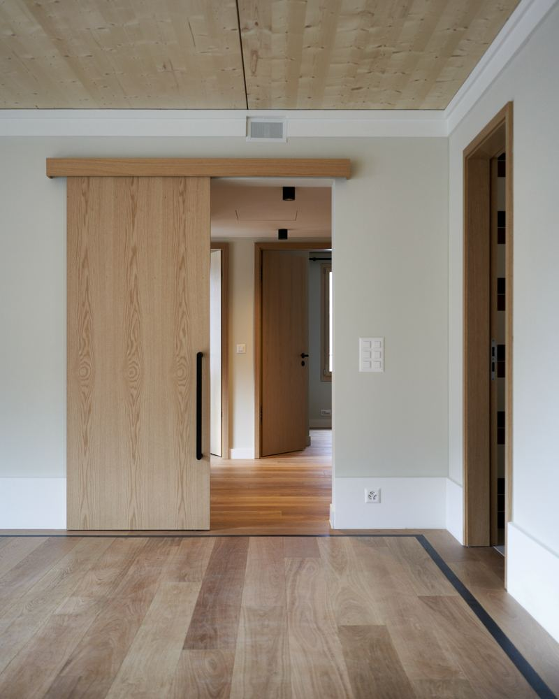

Andy Construct, entreprise de Carouge depuis 2007
Plâtrerie, peinture et isolation intérieure. Deux associés qui suivent eux-mêmes les chantiers.

- Registre du commerce Inscrite, vérifiable sur Zefix
- Depuis 2007 19 ans d'activité
- Siège à Carouge Toute la Suisse romande
Notre histoire
Née à Perly-Certoux en 2007, installée à Carouge depuis 2023 : une entreprise genevoise du second œuvre.
2007
1er juin · Perly-Certoux
Début de l'activité et inscription au registre du commerce de Genève.
2010
Février · Chêne-Bourg
Le siège s'installe à Chêne-Bourg ; le but social actuel est inscrit.
2023
Mai · Carouge
Siège route des Acacias. Caroline Chanton Bajrami rejoint Adnan Bajrami comme associée.
Aujourd'hui
Suisse romande
Placo, peinture, isolation acoustique et cloisons isolantes.


Notre métier, inscrit au registre du commerce
« Pose de faux-plafonds phoniques et cloisons légères phoniques et thermiques, isolations intérieures, plâtrerie, peinture, aménagement de logements et bureaux. »

Nos engagements
Venir voir avant de chiffrer
Nous mesurons et écoutons sur place, puis remettons une offre écrite.
Une entreprise vérifiable
Inscrite au registre du commerce depuis 2007, numéro IDE public.
Aucun supplément surprise
Un imprévu est annoncé et chiffré avant d'être exécuté, avec votre accord.
Des lieux respectés
Protections posées avant de commencer, nettoyage chaque soir.
Notre méthode, de la visite à la réception
Visite
Nous venons voir les lieux, prenons les mesures et écoutons votre besoin.
Offre écrite
Détaillée poste par poste, en CHF, avec la durée des travaux et ce qui n'est pas compris.
Chantier protégé
Sols, meubles et passages protégés. Nettoyage chaque soir, et à fond le dernier jour.
Réception
Nous faisons le tour des finitions avec vous. Une retouche ? Nous revenons.
Aucun travail supplémentaire sans votre accord écrit et chiffré.
Andy Construct en chiffres
- 19 ans d'activité
- 18 références, publiques et privées
- 4 métiers intérieurs
- 1 jour ouvrable, au plus, pour vous rappeler
Vérifiez qui nous sommes
Avant de laisser entrer une entreprise chez vous, vous pouvez vérifier son identité.
- Registre du commerce Inscrite, vérifiable sur Zefix
- Depuis 2007 19 ans d'activité
- Siège à Carouge Toute la Suisse romande
- Offre écrite Après visite sur place
- 18 références Dont la Ville de Genève
- Membre du GGE Entreprises genevoises du bâtiment
- Assurance responsabilité civile Attestation sur demande
- Attestations à jour AVS, LPP, impôts, sur demande
- Un seul interlocuteur De la pose à la peinture
- Raison sociale
- Andy Construct, Chanton & Cie
- Forme juridique
- société en nom collectif
- Numéro IDE
- CHE-113.706.162 · Vérifier au registre du commerce
- Siège
- Route des Acacias 48, 1227 Carouge (Genève)
- Activité
- depuis le 1er juin 2007
- Association professionnelle
- membre du GGE, Groupement des entreprises genevoises du bâtiment
- Assurance
- responsabilité civile d'entreprise, attestation sur demande
- Paiement
- Nous ne demandons jamais de paiement en liquide à l'avance.
Si un défaut apparaît après les travaux
Appelez-nous dès que vous le constatez : nous venons voir et nous réparons ce qui relève de notre travail.
Ce que dit la loi
Pour les contrats conclus depuis le 1er janvier 2026 : un défaut d'un ouvrage peut être signalé dans les 60 jours qui suivent sa découverte, et le droit à la réparation gratuite ne peut plus être exclu par contrat pour un élément de construction. L'action se prescrit par cinq ans pour un ouvrage immobilier. Si votre contrat se réfère à la norme SIA 118, le délai de garantie est de deux ans.
Vous avez un projet ?
Décrivez-le en trois étapes ou appelez-nous : nous convenons d'une visite.